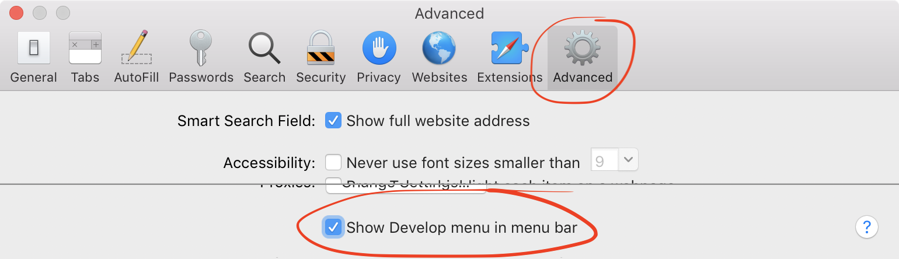

If you've just updated to macOS Mojave or the latest version of Safari Technology Preview, you might be greeted with the following message when you try to install an extension like you've always done in Safari. There doesn't appear to be any way round the problem, with existing extensions removed and unable to be added again even if you download the package for the extension as worked in previous versions.
Safari no longer supports the unsafe extension. You can find newer extensions reviewed by Apple in the App Store or Safari Extensions Gallery.
Fortunately there's a way round this problem. It requires manually installing the extension, so you won't get automatic updates for it in the future, but it's still perfectly usable and is the only way to get certain functionality until developers update their extensions for you (which some might not even do). This article presumes you've checked whether your extension exists in an Apple-approved form elsewhere, for example if you've installed uBlock Origin from uBlock0.safariextz you'll get the message that the extension was removed, but it is available to download from the Safari Extensions Gallery (here's a link to get uBlock Origin without going through this process). However, not all extensions are available there and it is soon to be discontinued anyway with App Extensions the only way forward. Follow these steps to install any extension blocked by Safari:
Download and unzip the extension
The first step is to download the .safariextz file. This will be from the developer's website, how you usually installed the extension previously. In this tutorial, I will use Tampermonkey as the example as it is my preferred userscripts extension for Safari and is not available on the App Store or the Gallery. Rename the file's extension from .safariextz to .zip, then extract the zip by double-clicking on the file. This gives you a .safariextension which is a folder containing the JavaScript and other files which make up the extension. You're ready to add the extension to Safari!
Add safariextension to Extension Builder
The Develop menu needs to be enabled to use the Extension Builder, which can be enabled from Safari → Preferences → Advanced → Show Develop menu in menu bar.
Once the Develop menu is enabled, open it and select Show Extension Builder. You'll be presented with a window, and if you've never built an extension before it will be blank. Click the + button and choose Add Extension…. Select the .safariextension folder that you extracted and choose the Select button.

Run the extension in Safari
The extension folder you added will be shown in the builder, and some extension information should be shown too such as a logo and author details. Click the Run button in the top-right to run the extension. You will be prompted to authenticate the action, which you can do by entering your account password or with Touch ID. The extension will be installed and be available from the usual places, such as a menu bar button and Safari Preferences. Enjoy your unblocked extension!
Import previous settings into new extension
Settings for an extension you previously had installed won't be seen by this extension you've run manually. If you don't mind setting up the extension from scratch, or it had no options, there's no need to worry about this step. Otherwise you can import these settings by copying them from the old extension to the new extension which has a different team ID. Open ~/Library/Preferences/com.apple.Safari.Extensions.plist with something like Xcode. Find the extension you just added, which should be at the bottom, and delete its dictionary using the minus sign. Go to the dictionary with the same extension name, click on the name and replace the team ID with 0000000000, 10 zeros. Save the file and reload the extension in Safari to see your settings imported.
To expand some more on precisely what this does: when you install an extension built by someone else usually, that extension will be signed with a Safari Extensions certificate. The package that is created has this certificate inside it, and this contains a Team ID which is the ID of the developer or organisation which built and signed the extension. Your previous installation of the extension will have a Team ID because of this signing process, however the extension you have packed yourself and run manually will not since you did not use a certificate. Therefore, the Team ID for your unsigned certificate is ten zeros, so you'll need to rename the old extension's Team ID to be zeros for it to associate it with your new extension.
Next steps
Next time you relaunch Safari, the extension will still be in Extension Builder but won't be ‘Run’. You can automatically run the extension with the following AppleScript. Add this script to ~/Library/Scripts/Applications/Safari (you may need to create the folders along this path, note the ~ reference to your home folder rather than the root Library folder).
tell application "System Events"
tell process "Safari"
set frontmost to true
click menu item "Show Extension Builder" of menu "Develop" of menu bar 1
delay 0.5
click button "Run" of splitter group 1 of window "Extension Builder"
click button 1 of window "Extension Builder"
end tell
end tell
You can also prevent Safari from inexplicably throwing away your extension settings by locking the preferences file. Get Info (⌘I) on the com.apple.Safari.Extensions.plist preferences file, then check the box labelled Locked. This prevents changes to the file and will ensure Safari doesn't throw away the preferences for the extension on quit.